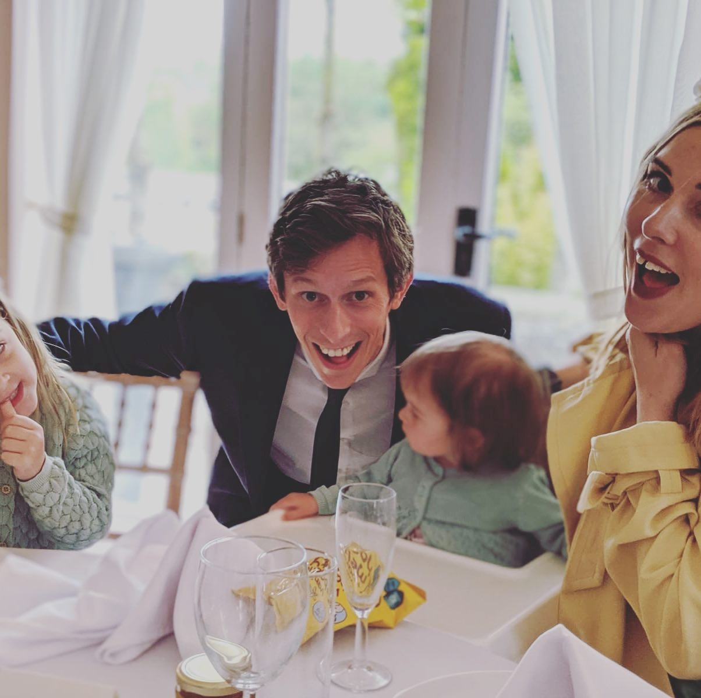

Alan's loves
His hobbies included skateboarding, drinking tennents, playing columns and skanking until dawn. He was young then.

NOW Alan's most favourite things are:
The Gentleman's sport that is Cricket. One of his fondest memories was when he spent an afernoon at Lords, with his dear friend Tom Staw, eating their way through a basket of strong smelling cheese and marvelling at the length of the neigbouring beer snake. Alan describes himself as a 'peak athlete' so he plays as well as spectates. In his late 20's he was a member of the 'Railway Taverners' cricket team in Highgate, London. The 'Tav's' claim to fame was being beaten in a one day test match by a team of 13 year old girls.
Alan has had a long standing love affair with Ale. His wife however has no time to be jealous of this as she is currently waging war with that harlot 'Diane' the sat-nav lady, who she is convinced is attempting to steal her husband. Alan has been a fan of ale since he relised that drinking a crate of Carling and coming home wearing a rubbish bin did not befit his model good looks. It is thanks to 'Ale' that alan invented the popular dance move 'twerking'.Alan is also very fond of Jeffery the cat who was the runt of his litter. Jeffery has a tiny head and a giant arse, his favorite foods are melon rind and celloptape. He has an addiction to 'digging' and likes to be worn as a scarf.
Alan Quotes
- "I may as well just have walked past and thrown twenty quid at that spec-savers" -optometry
- "I've got a bladdar like a peanut" -biology
- "This room is ridiculous, it is just an armchair looking at a lamp" -design